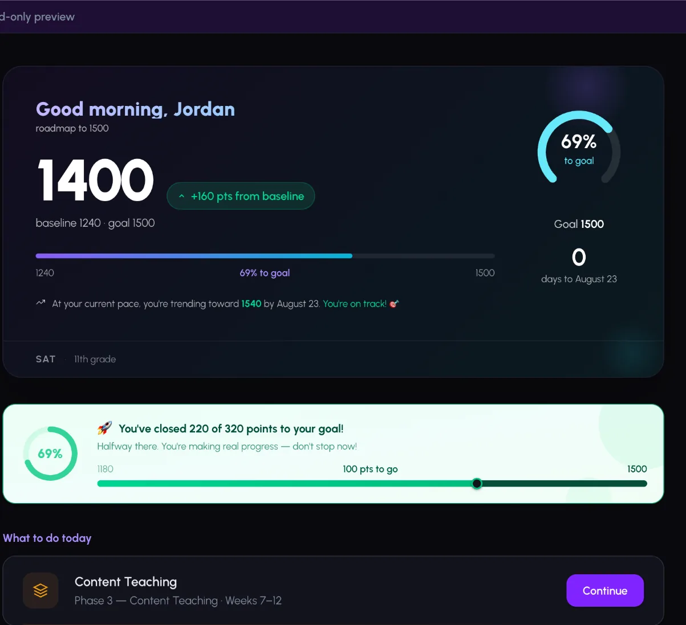

Program Strategy · Learning Design · Organizational Development
I turn complex challenges into programs, experiences, and systems that work.
I design, develop, and improve programs that help people and organizations succeed. My work brings together learning strategy, program development, technology, and cross-functional collaboration to turn complex challenges into practical, people-centered solutions.
With 9+ years across education, coaching, and program improvement, I focus on experiences that are effective, scalable, and grounded in the needs of the people using them.
From strategy and design to implementation and improvement.
Explore by Capability
Different challenges. A connected approach.
Explore the strategy, design, collaboration, and evidence behind the work.
Relevant evidence · Program Design
Relevant evidence · Product Design
Relevant evidence · Systems Thinking
Relevant evidence · Learner Experience
Relevant evidence · Collaboration
Featured work
Programs, products, and measurable progress.
-
01 · PROGRAM LAUNCH & STRATEGY
Program Launch & Training Strategy
Learning Strategy · Program Development · Cross-Functional Leadership
Led Training Pod readiness and enablement work across up to four concurrent academic program launches. Built reusable learning structures, verification practices, and quality standards while adapting training to each program's needs.
In-development BSAIIO faculty-readiness training: program context and clear expectations for faculty. -
02 · FLIGHT
Student Success & Performance Improvement
FLIGHT · Program Improvement · Learner Support Strategy
Designed the original FLIGHT learner-planning framework and collaborated on pilot refinement and implementation.
+7.5 pp course completion · +8.3 pp on-time progress observed during the pilot
The final Planner organizes tasks by learner phase, making the next step and relevant support easier to identify. -
03 · LUMAVI
Learning Technology & Experience Design
Lumavi · Digital Product Strategy · User Experience
Invite-only private beta
Designed a role-based educational platform connecting learning plans, tutor workflows, progress monitoring, and family communication. Early partner feedback informs ongoing refinement.

The learner view makes progress toward a goal and the next action easier to understand.
The through-line
From individual learning to programs and systems that scale.
My experience connects direct learner support with program strategy, cross-functional implementation, and continuous improvement.
Instruction
Designing how individual learning happens.
Individualized Programming
Fitting pathways to individual learners.
Learner Experience
Designing around what learners actually need.
Educational Systems
Designing the supports that connect people and tools.
Digital Products
Turning complex workflows into tools that feel simple to use.
Program Design
Building the structures that help programs launch, work, and evolve.
How I work
Six habits I bring to every project.
Human-centered
People before assumptions.
Systems-oriented
See how the parts connect.
Collaborative
Design with the people involved.
Research-informed
Let evidence guide decisions.
Iterative
Build, learn, refine.
Scalable
Repeat what works; adapt what matters.
I build practical programs and systems around the people who use them.
Across education, technology, and organizational development, I turn complexity into experiences teams can implement, improve, and sustain.